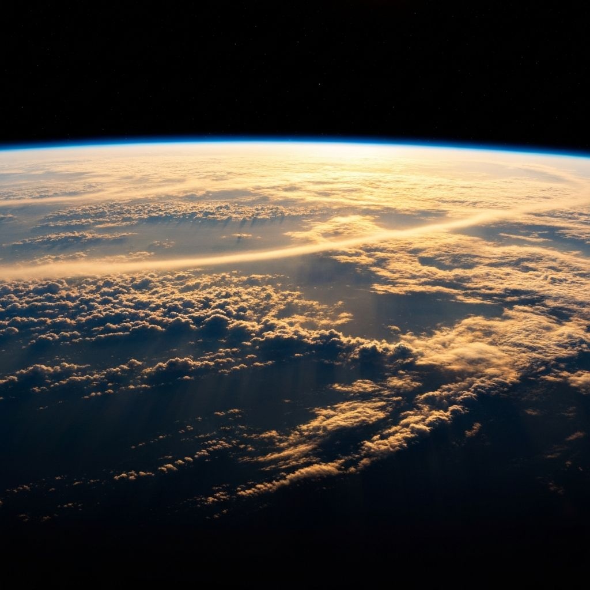

A Visual Story
The planet is changing faster than ever before. Explore the data, see the evidence, and understand what it means for life on Earth.
Since the Industrial Revolution, human activities have released enormous quantities of greenhouse gases into the atmosphere. The result? A planet heating faster than at any point in at least the last 10,000 years. The consequences ripple through every ecosystem, every community, every life on Earth.
This temperature spiral shows over 140 years of global temperature anomalies. Each ring represents a year, expanding outward as temperatures climb. The shift from cool blues to alarming reds tells a story that data alone cannot capture — a planet in distress. Scroll down to zoom into the deforestation globe at its center.
Forests are Earth's greatest carbon sinks, absorbing billions of tons of CO₂ annually.
Yet every year, we lose an area of forest roughly the size of a small country. These
hotspots are concentrated in tropical regions — the Amazon, Southeast Asia, Central
Africa — where biodiversity is richest and the stakes are highest.
Click any hotspot to explore its history.
Scroll to explore deforestation
The ice remembers what we choose to forget
Arctic sea ice has declined by over 40% since satellite records began in 1979
Every country contributes to global emissions — but not equally. This visualization maps CO₂ output per capita and total across the globe. Each bubble represents a nation, sized by its emissions and colored by continent. The imbalance is striking: a handful of nations produce the vast majority of emissions per person.
Germany's Energiewende (energy transition) drove a 40% drop in CO₂ emissions from 1990–2023. Aggressive expansion of wind and solar, combined with coal phase-out legislation, shifted the country away from fossil fuels while maintaining industrial output.
The UK halved its emissions since 1990 — one of the largest reductions among developed economies. Closure of all coal plants, rapid offshore wind deployment, and the legally binding 2008 Climate Change Act created consistent year-on-year cuts.
Sweden's carbon tax — introduced in 1991, now over $130/tonne — makes burning fossil fuels economically painful. Combined with hydropower, nuclear energy, and district heating, Sweden maintains some of the lowest per capita emissions among wealthy nations.
Qatar, Kuwait, and Brunei lead per capita emissions, while the sheer scale of China, the USA, and India dominates total output. As these bubbles grow over the decades, the atmosphere accumulates more carbon — a debt that future generations will reckon with. Yet the success stories above prove that political will and smart policy can reverse the trend.
Birds are among the most sensitive indicators of ecosystem health. As forests shrink, so do the populations that depend on them. This visualization captures the painful correlation between forest loss and bird extinction risk — watching trees become stumps and skies grow silent as the timeline progresses.
The Red List Index for bird species has declined steadily, meaning more species are moving closer to extinction each year. With a risk index of 0.27, over a quarter of assessed bird species face some level of extinction threat. The visualization makes the abstract concrete — each fading tree, each vanishing bird, is a real loss.
Every minute, the equivalent of 27 football fields of forest is destroyed
While the data is alarming, it is not hopeless. Renewable energy adoption is accelerating. Reforestation efforts are expanding. Policy changes are taking effect. The same data that shows us the damage also points toward the solutions — if we act now.
Renewal is possible
Global renewable energy capacity grew by 50% in 2023 alone
EU policy initiatives have demonstrably reduced emissions in participating nations. Anti-deforestation hotspots — places where forest cover is actually growing — are emerging in Europe, East Asia, and parts of North America. These bright spots prove that systemic change is possible when political will meets public action.